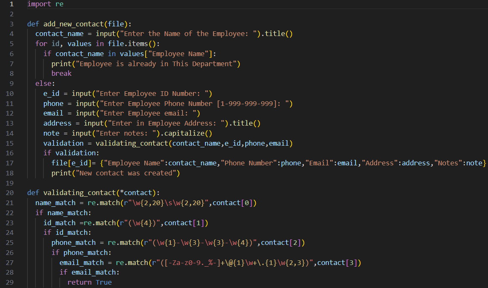
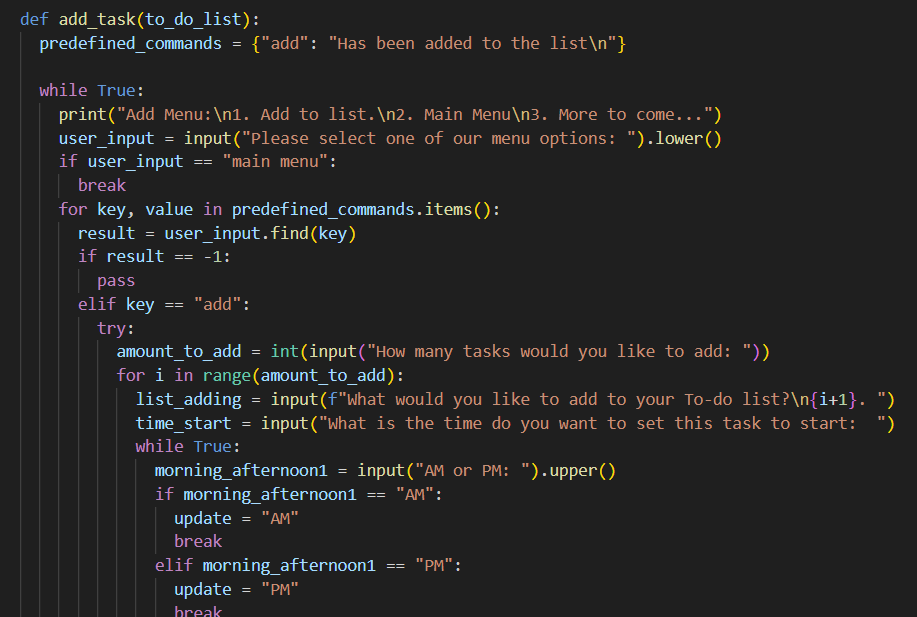
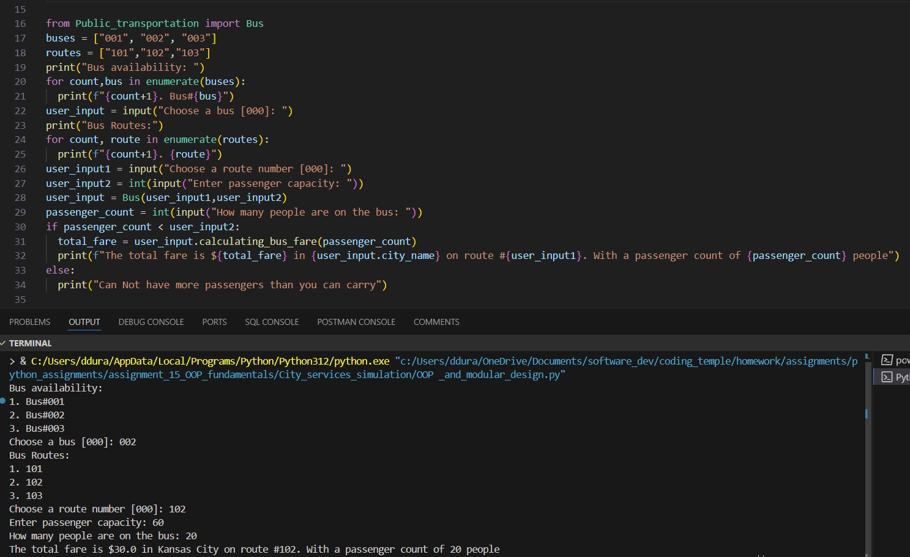
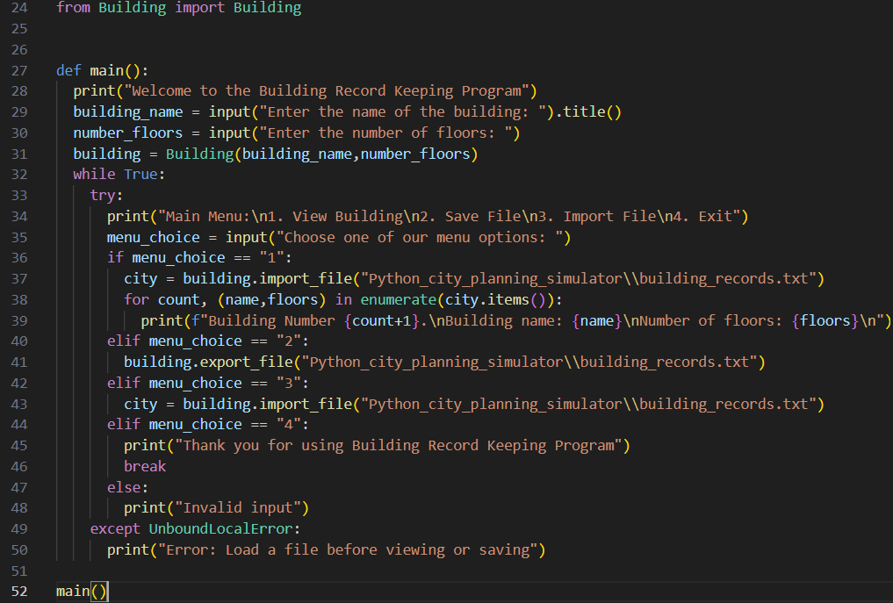

Archives
Shhh, The Archives Are Sleeping!
Shhh, The Archives Are Sleeping!
All projects listed are on my Github. Feel free to visit and drop a follow or contact me and collaborate.
 Contact Management System is a scalable command-line program that handles the input and storage of data into text files associated with contact information for different departments within a company.
Click here to learn more, and see the source code.
 This is a command-line style interface. Users can access different menus by typing out the corresponding menu option. Upon entering a menu, they are presented with various functions to choose from. Within each function, a step-by-step process guides the user. They can input the information they want the program to have. If the user enters something incorrectly, the program will provide feedback and prompt them to try again.
Click here to learn more, and see the source code.
OOP Fundamentals is another one of my early works from when I was learning about Object-oriented Program (OOP). This project has two different programs within it.
 A simple command-line program that handles user input, allowing them to choose a bus destination and add a fee. The program simulates city services related to transportation. Users will select a route, specify the maximum capacity of the bus, and input the number of people currently on the bus. The program will then calculate and display the total fee that will be collected.
 Another simple command-line program that handles user input. Users can choose a building name and specify the number of floors. The program stores this data in text files.
Click here to learn more, and see the source code.